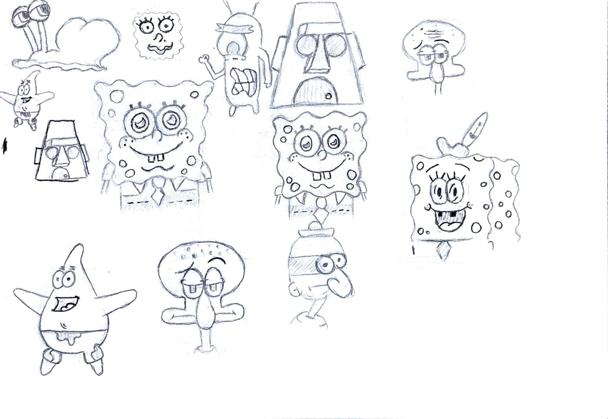
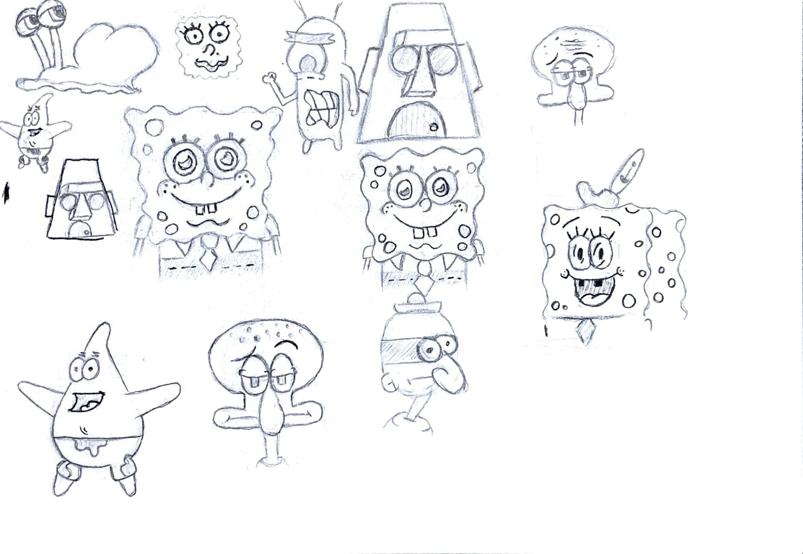

Branding
Visuelle identiteter der fortæller historier og skaber forbindelse – fra logo til et lille, sammenhængende univers.
Grafisk designer med fokus på visuel identitet, stemning og form.
Jeg arbejder med branding, layout og illustration og skaber visuelle løsninger,
der er enkle, gennemtænkte og personlige.
Mit arbejde er inspireret af kontraster – mellem det rolige og det rå,
det legende og det strukturerede – og formes af både omgivelser,
bevægelse og mennesker.
Tjenester
Tre områder jeg arbejder mest med — og hvordan jeg typisk hjælper kunder.
Visuelle identiteter der fortæller historier og skaber forbindelse – fra logo til et lille, sammenhængende univers.
Layout til print og digitalt med fokus på typografi, komposition og et tydeligt visuelt udtryk.
Stemningsfulde billeder fra Nordatlanten og redigering der understøtter fortællingen.
Et lille udvalg af det, jeg arbejder med lige nu. Klik for at åbne casen.
2023 – nu
Arbejder med grafisk design, foto, UX og front-end udvikling. Projekter med fokus på branding og visuelle fortællinger.
Før 2023
Erfaring med teamwork, ansvar og at skabe oplevelser for andre – både på og uden for banen.
(Værktøjer som Illustrator/Photoshop/InDesign m.m. beskriver jeg i “Om mig”.)
Et lille indblik i mit udtryk, min proces og hvad jeg bygger mine løsninger på.

Jeg er Ingrid – en visuelt drevet multimediedesigner med fokus på branding, layout og illustration. Jeg lægger vægt på, at form, stemning og funktion hænger naturligt sammen, så hvert projekt får sit eget udtryk — uden at miste sammenhæng.
Mit visuelle udtryk er ofte kendetegnet ved kontraster – mellem det rolige og det rå, det strukturerede og det legende. Jeg er optaget af, hvordan små detaljer kan give et projekt personlighed og skabe en helhed, der føles gennemtænkt.
Jeg arbejder bedst, når der er tid til at tænke, teste og justere. I stedet for hurtige løsninger går jeg i dybden med idéen, konteksten og målgruppen, så designet ikke kun fungerer visuelt, men også kommunikerer klart og ærligt.
Jeg er født og opvokset på Færøerne med rødder i Island, og den nordatlantiske blanding af rå natur, gamle huse og moderne byliv har haft stor betydning for mit visuelle blik.
Sport → design
Jeg omsætter tempo, fokus og samarbejde fra håndbold til visuel kommunikation.
Jeg er vokset op med håndbold, hvor tempo, fokus og samarbejde er afgørende. Den tilgang tager jeg med ind i mit designarbejde – især i projekter, der handler om sport, bevægelse og fællesskab.
Jeg arbejder struktureret under pres, tænker i flow og visuelle hierarkier og er vant til at justere hurtigt, når situationen ændrer sig. Det gør mig særligt motiveret for at arbejde i et miljø som en håndboldklub, hvor kommunikation ofte skal være klar, hurtig og visuel.
Tre branding-pakker der passer til forskellige behov. Du kan også vælge enkelte opgaver fra prislisten.
Branding pakke
1.500 kr.
God til små projekter og hurtige leverancer.
Branding pakke
3.500 kr.
Til dig der vil have en tydelig identitet.
Branding pakke
6.500 kr.
Når du vil have et komplet lille univers.
Har du et projekt, en idé eller bare lyst til at sige hej? Skriv til mig.
E-mail: KleinDesignGrafik@gmail.com
Lokation: Færøerne · Danmark

 
